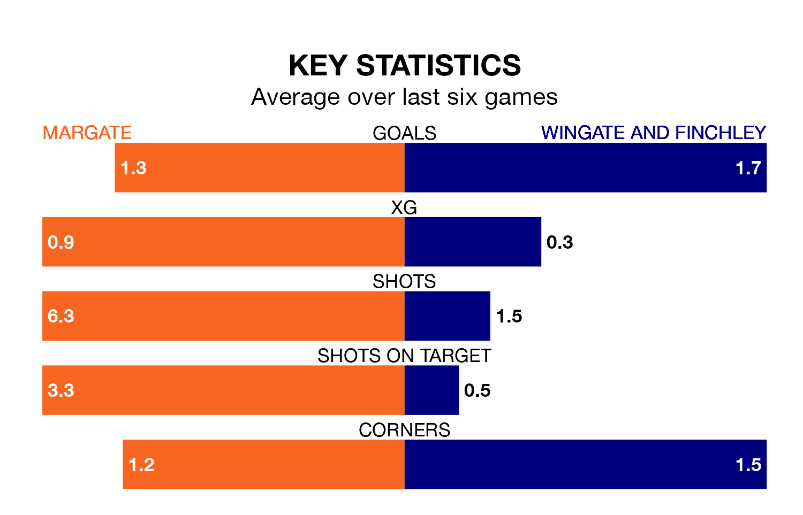

Relegation candidates Margate face a challenge against high-flying Wingate and Finchley at Hartsdown Park on Saturday.
Margate are 19th in the Isthmian Premier Division table, and have picked up eight wins and nine draws in their 39 games to date.
The Blues, meanwhile, are third in the standings with 71 points, having won 22 and drawn five of their first 38 matches, and are 20 points behind table-toppers AFC Hornchurch.
With 44 goals in 39 games so far this season, Margate are the league's third-lowest scorers with 1.1 goals per game. And they are conceding more than average, letting in 74 goals at a rate of 1.9 per game.
Wingate & Finchley, meanwhile, are above average scorers, with 1.8 goals per game, compared to a league average of 1.6. They have conceded 1.5 goals per game.
In the last 10 years, Margate and Wingate & Finchley have played each other on 12 occasions. Margate won five of them, Wingate & Finchley four, and they drew three times.
On average, Margate scored 1.2 goals and the Blues 1.0 in those matches.
Their last meeting was on November 18, when Wingate & Finchley won 1-0 at home.
The hosts are in mixed form in the Isthmian Premier Division, with two wins and two draws from their last six games.
With five wins and one loss over that period, the Blues' form is much better – they have taken 15 points from 18, compared to Margate's eight.
Margate's last match was on April 13, a 1-0 loss against AFC Hornchurch.
Wingate & Finchley beat Haringey Borough 1-0 last time out, also on April 13.
Updated: 15:40 (UTC), 18/04/24